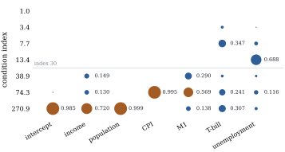

26.3 Condition indices and variance decomposition
A variance inflation factor says how much one coefficient has suffered, but not which other regressors are responsible, how many near-dependencies there are, or whether the intercept is involved. The eigenvalue analysis of Section 26.1 answers those questions but depends on the units of the columns. This section fixes a scaling and derives the variance-decomposition proportions of Belsley, Kuh and Welsch (1980).
26.3.1. Scaling the columns
The canonical directions of
Let
Whether to centre before scaling is a real choice.
Let
Let
(a)
(b)
(c) If a non-intercept column
Proof.
(a)
(b) Number the columns so that
(c) Take
Part (b) is the formal content of the argument of
Belsley (1984) for not centring: centring can only hide
near-dependencies, never create them. Part (c) shows
what it hides. A regressor that varies little relative
to its mean is nearly a multiple of the column of ones,
and that near-dependency with the intercept is invisible
in
Whether the hidden dependency matters depends on the question, as in Example (A quadratic far from the origin). It inflates the variance of the intercept, the mean response at the origin, and of the coefficients whose columns take part in it. If the origin is far from the data, it concerns a question nobody asked; if the origin is meaningful, the uncentred diagnostic is the honest one. This chapter uses the uncentred scaled design, as Belsley, Kuh and Welsch do, and reports the centred condition number alongside.
26.3.2. The variance-decomposition proportions
Let the singular value decomposition of the scaled
design be
Let
(a)
(b) For each
(c) Let
Proof.
(a) Since
(b)
(c) Put
Part (c) is why the proportions locate
near-dependencies. If the condition indices in
Idea. Belsley, Kuh and Welsch’s
reading of the table: scale the columns to unit length;
flag condition indices of about
Return to the regression of Example (Large factors, precise estimate), with an intercept and six regressors. The scaled design has condition indices and proportions
| Index | const. | income | pop. | CPI | M1 | T-bill | unemp. |
|---|---|---|---|---|---|---|---|
Figure 26.3.1
shows the table graphically. Three indices exceed
- Index
- Index
- Index
A proportion is a share, not a size: the

import numpy as np
import statsmodels.api as sm
macro = sm.datasets.macrodata.load_pandas().data
names = ["const", "realdpi", "pop", "cpi", "m1", "tbilrate", "unemp"]
X = sm.add_constant(macro[names[1:]].to_numpy())
X_s = X / np.linalg.norm(X, axis=0) # unit-length columns, not centred
U, mu, Vt = np.linalg.svd(X_s, full_matrices=False) # X_s = U diag(mu) V'
eta = mu[0] / mu # condition indices
phi = Vt.T ** 2 / mu**2 # phi[j, k] = v_jk^2 / mu_k^2
prop = (phi / phi.sum(axis=1, keepdims=True)).T # row k: proportions for index eta_k
print("index " + " ".join(f"{nm[:7]:>7s}" for nm in names))
for k in range(len(mu)):
print(f"{eta[k]:7.1f} " + " ".join(f"{p:7.3f}" for p in prop[k]))Z = X[:, 1:] - X[:, 1:].mean(axis=0)
Z_s = Z / np.linalg.norm(Z, axis=0) # centred, then unit length
mu_c = np.linalg.svd(Z_s, compute_uv=False)
print("scaled condition number, not centred:", round(eta[-1], 1))
print("scaled condition number, centred :", round(mu_c[0] / mu_c[-1], 1))
cv = X[:, 1:].std(axis=0) / X[:, 1:].mean(axis=0)
print("coefficients of variation:", dict(zip(names[1:], np.round(cv, 3))))def r_squared(target, others):
fit = sm.OLS(macro[target], sm.add_constant(macro[others])).fit()
return fit.rsquared
print("pop on realdpi : R^2 =", round(r_squared("pop", ["realdpi"]), 4))
print("cpi on realdpi, m1 : R^2 =", round(r_squared("cpi", ["realdpi", "m1"]), 4))The script behind the example checks the bound of Theorem 26.3.2(c) for the groups formed by the last one, two and three indices, and the inequalities of Proposition 26.3.1.
26.3.3. Single cases
Collinearity diagnostics can be dominated by a few cases: one far out along a near-dependency can create it, one lying across it can hide it. The deletion formulas of Chapter 20 show that only cases of high leverage can have much effect.
Let
(a)
(b)
(c)
Proof.
- (a) This is the
rank-one deletion formula
- (b) The lower bound
is clear from (a). For the upper, apply the
Cauchy–Schwarz inequality to the inner product
- (c) For a positive
definite matrix,
So removing a case of small leverage changes the
smallest eigenvalue by at most the factor
Adding a case never increases a variance, by (b) read the other way round, but it can increase every variance inflation factor and the condition number (Exercise (B2)).
26.3.4. Exercises
A. Check your understanding
In the table of Example (A consumption function), why is the intercept’s variance almost entirely attributed to the largest index, although the intercept is not an economic variable? Which coefficients would you expect to change most if a few more years of data were added in which population grew faster than income?
B. Practice
Let
Solution. The scaled columns are
unit vectors at angle
Take
Solution. By Proposition 26.3.3(b)
read backwards, adding a case can only decrease
C. Going deeper
Suppose
Solution. If